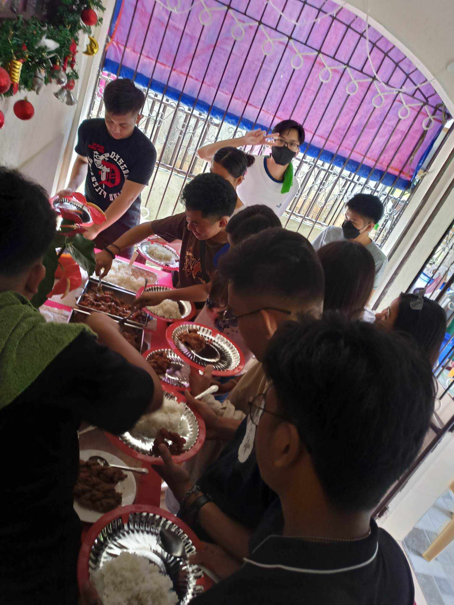
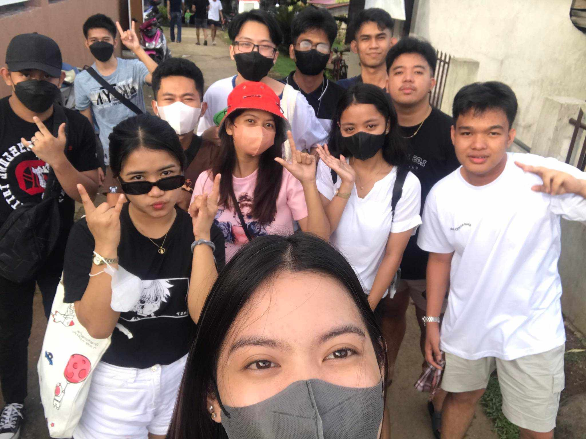
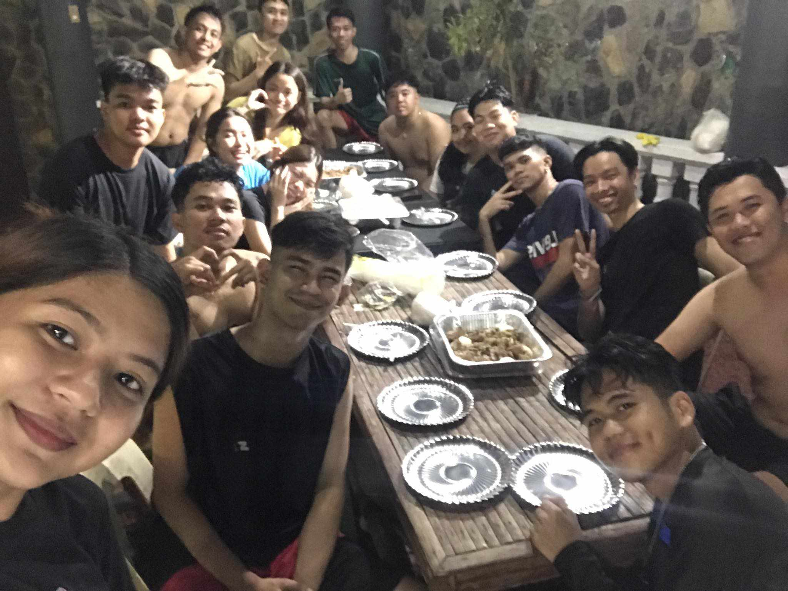
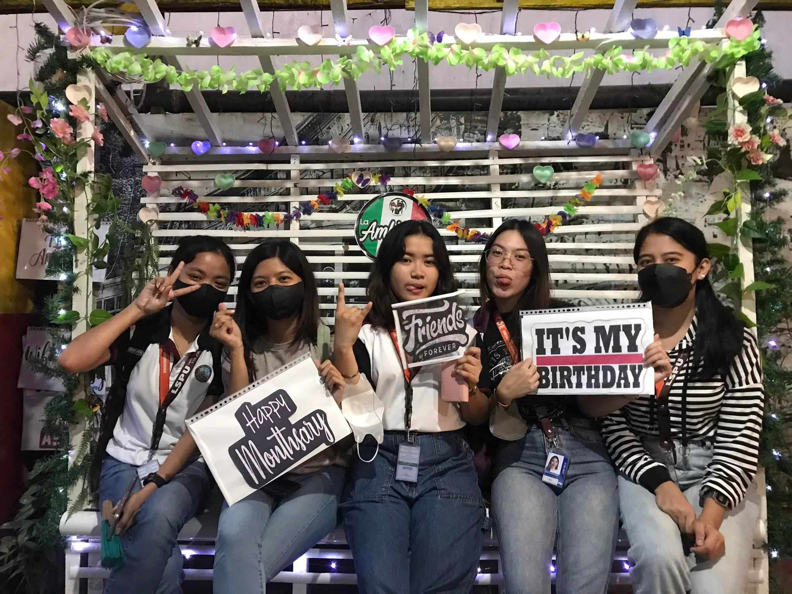
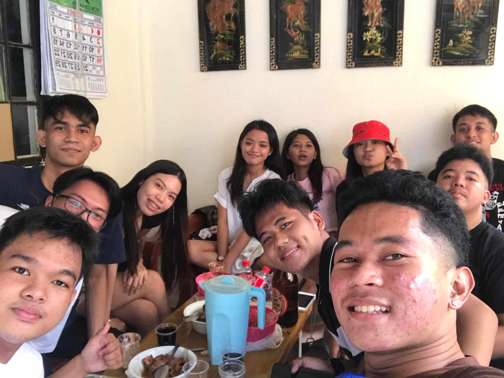
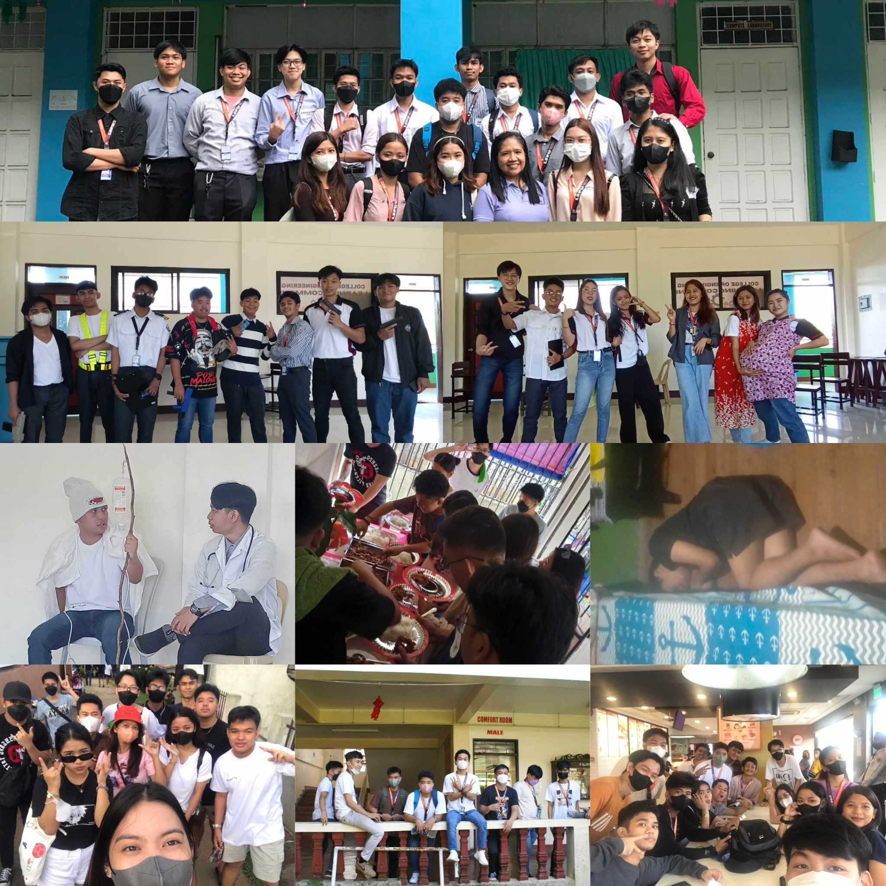

The memories created during college are etched in the hearts of classmates, serving as a testament to the strength of their bonds. From the laughter-filled dorm room gatherings to the adventurous road trips taken during breaks, these shared moments become the threads of an intricate tapestry that weaves together the lives of classmates.
As college life evolves, so do the relationships. Many friendships endure and deepen, becoming an enduring source of support and companionship in the tumultuous journey of life. Some even lead to partnerships in careers or ventures, as the trust and understanding developed in college pave the way for future collaborations.
The bonds formed among classmates in college life are a remarkable testament to the depth of human connection. These relationships are more than just casual associations; they are the building blocks of lifelong friendships and cherished memories. College life serves as a crucible, forging bonds that endure through the tests of time and distance.
One of the primary reasons why these bonds are so special is the shared journey that college students embark upon. In this phase of life, young individuals often leave their comfort zones, families, and hometowns to embrace the unknown. This shared experience of navigating the complexities of academia, juggling assignments and exams, and striving for personal growth creates a unique camaraderie among classmates. They become a support system, a surrogate family away from home.
The late-night study sessions, the triumphs and tribulations of group projects, and the countless discussions about life's big questions all contribute to the bonding process. These shared experiences build a sense of unity and empathy among classmates, fostering a deeper understanding of one another's strengths, weaknesses, and aspirations.
Never ending journey
There can be no thought of finishing for ‘aiming for the stars.’ Both figuratively and literally, it is a task to occupy the generations. And no matter how much progress one makes, there is always the thrill of just beginning.
Absolutely, "college is not the end but the start of a new journey." It beautifully encapsulates the idea that higher education marks the beginning of a fresh chapter in one's life, filled with opportunities for growth, learning, and personal development. It signifies that the experience gained in college serves as a solid foundation for the adventures and challenges that lie ahead, emphasizing that there is so much more to discover and achieve beyond the academic years. This phrase inspires a positive outlook on the future, encouraging individuals to embrace the limitless possibilities that await them after graduation.
The dreams of yesterday are the hopes of today and the reality of tomorrow.
As you embark on this new journey, may each step be guided by the wisdom of your past experiences and the anticipation of the adventures that lie ahead. Embrace the unknown with an open heart, for it is in the uncharted territories that we often discover our truest selves. Remember that every ending is but a prelude to a new beginning, and as you leave one chapter behind, you author the next with the pen of your dreams. So, step forward with courage, enthusiasm, and the belief that your journey holds the promise of countless discoveries and boundless opportunities. Your new journey awaits; embrace it with open arms and an unwavering spirit.
Reaching for the Stars
Reaching for our dreams is like chasing the stars in the night sky. Though they may seem distant and elusive, it's in our unyielding pursuit that we discover the brilliance of our own potential. With unwavering determination, we can pluck those dreams from the heavens and make them our own, illuminating our path with the radiant glow of ambition and achievement.
 To go places and do things that have never been done before – that’s what living is all about.Pursuing our goals is about more than simply the destination; it's about the transformational journey we take, the people we meet, and the experiences we gain, all of which shape us into the people we need to be to achieve our goals. It's a reminder that the journey is just as essential as the goal, and that pursuing our aspirations is a monument to the unrelenting force of the human spirit and the beauty of unshakable optimism.